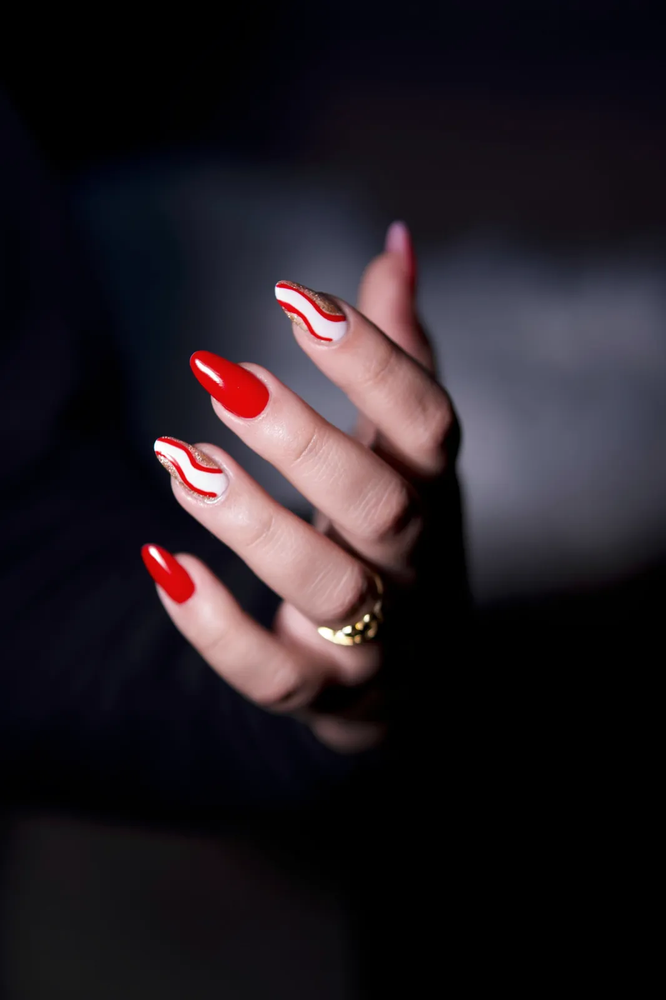
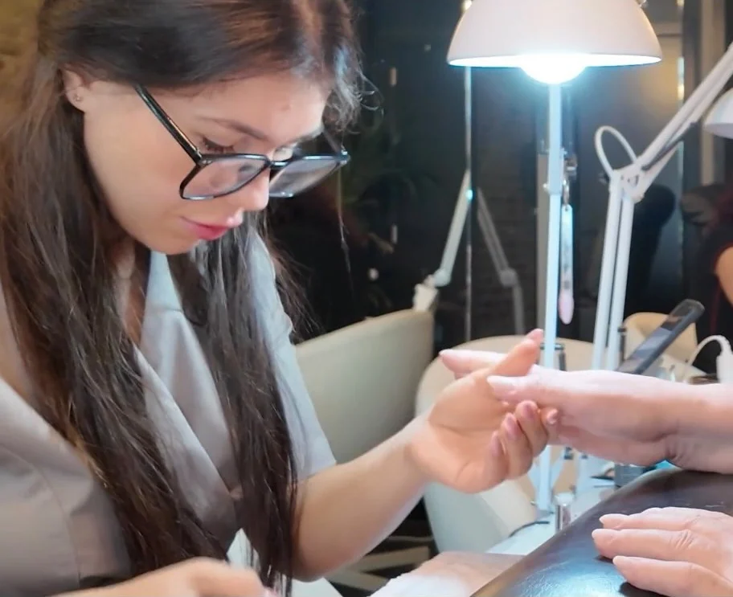
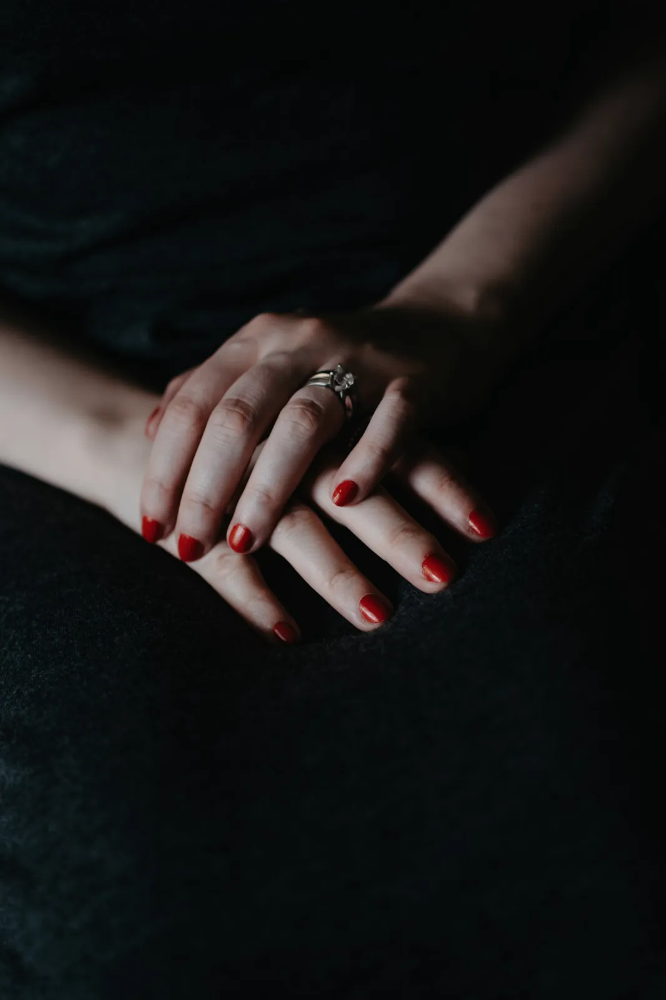
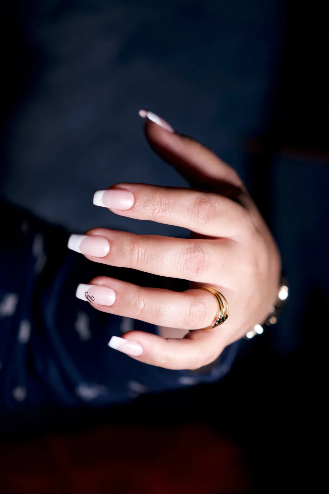
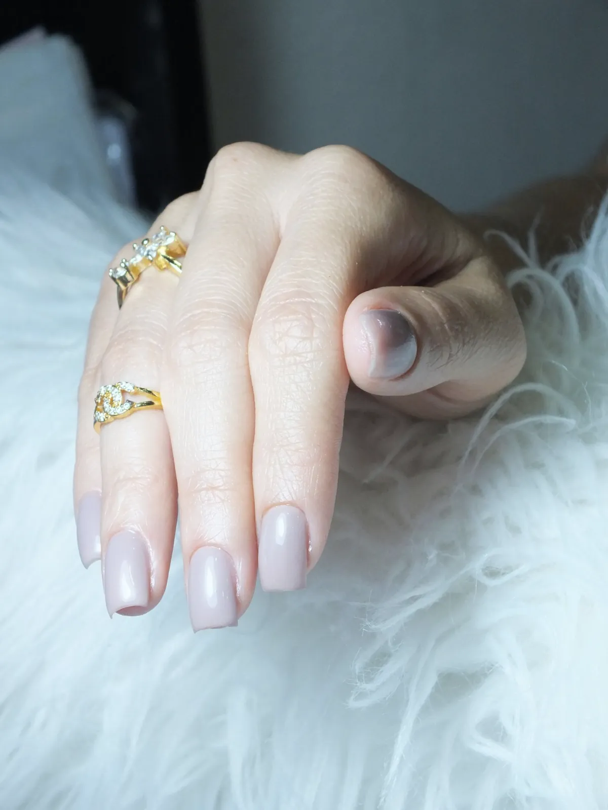
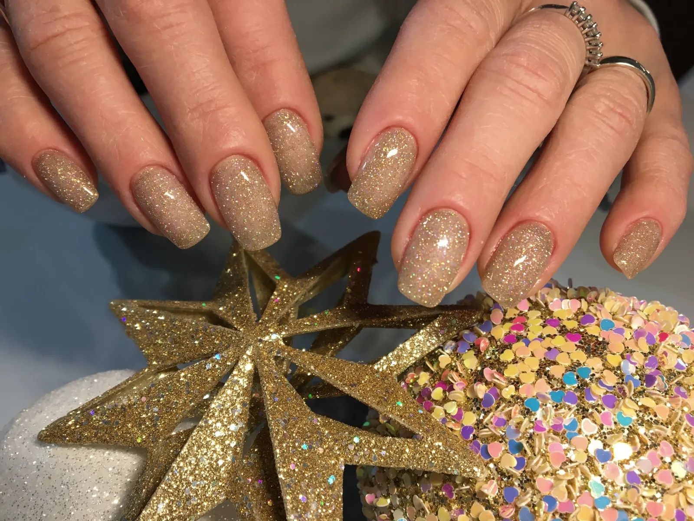
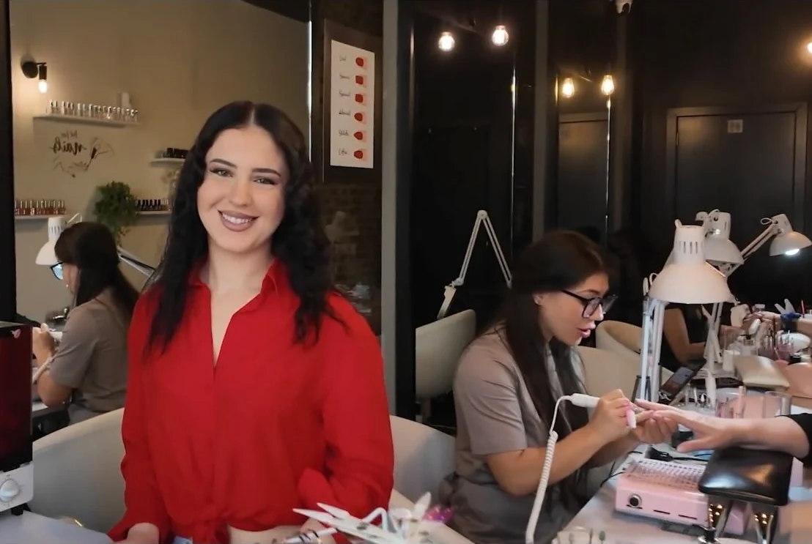

Tijd voor een verse set
Manicure, pedicure, BIAB of nail art met alle details erop. Bij Sissy Nails kies je rustig je kleur en vorm, en praat je ondertussen gewoon bij. Je komt binnen als klant, je gaat buiten als vriendin.

Waarvoor je langskomt
Van een snelle opfrisbeurt tot een volledige set met design. We nemen de tijd voor je handen en voeten, en voor jou.

- 01Handen
Manicure
Nagels in vorm, nagelriemen verzorgd en een kleur die netjes blijft zitten.
- 02Sterke nagels
BIAB
Een stevige laag op je eigen nagels. Ideaal als je ze wil laten groeien zonder dat ze breken.
- 03Voeten
Pedicure
Verzorgde voeten en mooi gelakte teennagels, klaar voor sandalen of gewoon voor jezelf.
- 04Designs
Nail art
Ons favoriete deel van de job. Swirls, French met een twist, glitter of je eigen idee: breng gerust een voorbeeld mee.
Welke vorm wordt het?
Bij ons hangen ze aan de muur, van oval tot coffin. Twijfel je? We zeggen je eerlijk wat bij jouw handen en je dagelijkse leven past.
Zag je iets moois?
Een foto op Instagram, een kleur die je niet uit je hoofd krijgt? Laat het zien bij je afspraak. Wij maken er jouw versie van.





Even uitblazen in hartje Antwerpen
Onze studio ligt aan de Statiestraat, op een paar minuten wandelen van Antwerpen-Centraal. Kom je met de trein of na het werk? Dan zit je zo bij ons aan tafel.
We don't make clients, we make friends.Zo staat het op onze Instagram, en zo voelt het ook.
Klaar voor je volgende set?
Stuur ons een berichtje op WhatsApp met de behandeling en het moment dat jou past. We laten snel weten wanneer er plaats is.
Zes dagen per week
- Maandag tot zaterdagOpen
- ZondagGesloten
- Instagram@sissy_nails_antwerp
Antwerp's finest nail studio.Zo staat het in onze bio. Kom gerust zelf kijken.